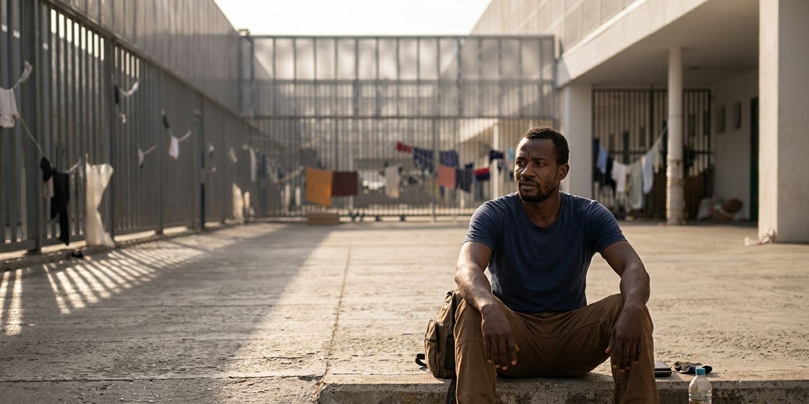

Marchio azienda & servizi
Imprese del Friuli Venezia Giulia impegnate nella sostenibilità ambientale, economica e sociale.

“Io acquisto prodotti la cui origine regionale e sostenibilità sono garantite”
IO SONO FRIULI VENEZIA GIULIA è il marchio che testimonia la sostenibilità delle imprese regionali e l’origine delle produzioni agroalimentari.
Grazie al marchio, oggi puoi riconoscere più facilmente l’origine di un prodotto della filiera agroalimentare regionale. Scegliere questo marchio significa sostenere un modello di sviluppo basato sulla qualità, sulla tracciabilità e sulla responsabilità territoriale.
Imprese del Friuli Venezia Giulia impegnate nella sostenibilità ambientale, economica e sociale.
Prodotti a filiera tracciabile con QR-code e trasparenza sulla provenienza delle materie prime.
Iniziative e progetti che rafforzano i principi del marchio collettivo.
Qualità e territorio in un prodotto dal forte legame con la tradizione.
Vini e produzioni enologiche che raccontano la cultura del territorio.
Prodotti lattiero-caseari con forte identità locale e qualità riconoscibile.